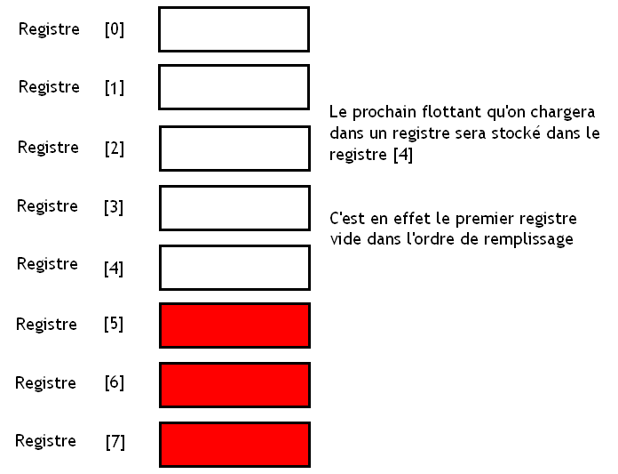
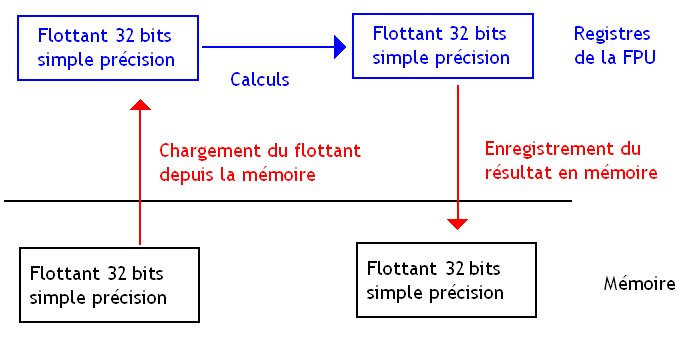
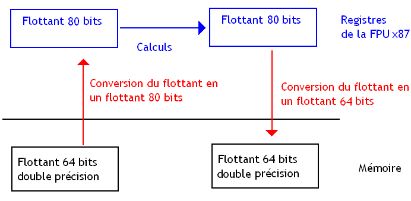
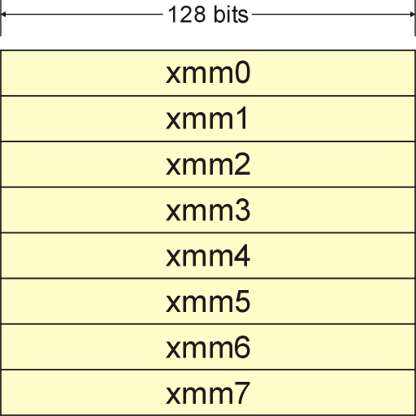

Un ordinateur est souvent décrit comme une machine à calculer programmable. Autrefois, les ordinateurs ne pouvaient faire de calculs que sur des nombres entiers, et pas sur des nombres à virgule. Pour combler ce manque, diverses techniques ont été inventées pour permettre à nos ordinateurs de gérer ces nombres à virgule. La méthode actuelle utilisée pour les représenter s'appelle la virgule flottante, qui permet de coder sous forme binaire un sous-ensemble des nombres à virgule.
Si vous avez déjà programmé, vous savez sûrement ce qu'est un nombre flottant. Mais savez-vous comment les calculs avec ces nombres flottants sont effectués dans notre ordinateur ?
Si la réponse est non, alors ce tutoriel va vous ravir.
L'ensemble des instructions machines que peut effectuer un processeur s'appelle son jeu d'instructions. Ce jeu d'instructions est déterminant quand il s'agit de fournir un support matériel efficace des nombres flottants. Il y a une quarantaine d'années, nos processeurs n'étaient capables de n'utiliser que des nombres entiers et aucune instruction machine ne pouvait manipuler de nombres flottants. On devait alors émuler les calculs sur les flottants par une suite d'instructions machines effectuée sur des entiers. Cette émulation était effectuée par un programme écrit par le développeur d'une application, voire par le système d'exploitation : celui-ci fournissait un certain nombre d'appels système permettant de simuler des calculs effectués sur des nombres flottants à partir d'entiers. Dans les deux cas, les calculs sur des nombres flottants étaient alors vraiment lents, et la manière de stocker des flottants en mémoire dépendait de l'application ou du système d'exploitation.
Instructions flottantes micro-codées
Pour limiter la catastrophe, nos processeurs ont alors incorporé des instructions de calculs sur des nombres flottants. Les premiers processeurs de ce type n'incorporaient néanmoins pas le moindre circuit capable d'effectuer des opérations flottantes. Ceux-ci micro-codaient les instructions flottantes.
Sur ces processeurs, chaque instruction machine capable de gérer des nombres flottants était convertie en interne (c'est-à-dire dans le processeur) en une suite d'instruction entière qui émulait l'instruction voulue.
Pour ce faire, notre processeur incorpore dans ses circuits une petite mémoire ROM. Celle-ci stocke, pour chaque instruction qui doit être émulée, une suite d'instructions de base exécutables par les circuits de notre processeur. Lorsqu'une instruction à émuler doit être exécutée, notre processeur se contente de lire la suite d'instructions à exécuter dans la mémoire ROM et l’exécute.
FPU
De nos jours, les circuits capables de calculer sur des nombres flottants sont intégrés dans le processeur et ne sont pas séparés de celui-ci. Néanmoins, ces circuits sont parfois regroupés ensemble dans une grosse unité de calcul nommée une Floating Point UnitFloating Point Unit, aussi appelée FPU. Ces FPU peuvent effectuer des instructions de calcul assez diverses : addition, multiplication, soustraction, division, racine carrée, logarithmes, exponentielles, tangentes, sinus, cosinus, et d'autres fonctions mathématiques.
Néanmoins, ce regroupement des circuits calculant sur les nombres flottants n'est pas aussi strict qu'on pourrait le croire. Dans certains cas, les circuits capables d'effectuer les divisions flottantes sont séparés des autres circuits (c'est le cas dans la majorité des PC modernes) : tout dépend de l'architecture interne du processeur utilisé.
Autre détail : notre processeur contient quasiment toujours des petites mémoires très rapides nommées registres qui sont utilisées pour stocker temporairement des données que le processeur doit manipuler. Cela permet de stocker des résultats temporaires qui n'ont rien à faire en mémoire, ou encore à accélérer les calculs (ces registres sont des mémoires très rapides).
Dans certains processeurs, des registres sont spécialement dédiés aux unités de calcul flottantes et ne peuvent stocker que des nombres flottants : ces registres sont alors séparés des registres qui stockent des nombres entiers. Dans ce cas, une instruction entière ne peut être appliquée sur un registre contenant un nombre flottant. Parfois, un processeur peut même utiliser plusieurs registres pour stocker un seul flottant et possède des circuits conçus pour travailler sur les deux registres en même temps ! On peut ainsi supporter des flottants d'une taille plus grande que celle des registres. Dans d'autres processeurs, les registres ne sont pas dédiés à une unité particulière et peuvent stocker indifféremment des nombres flottants et des nombres entiers.
Coprocesseurs arithmétiques
Autrefois, ces FPU n'étaient pas incorporés dans le processeur, mais étaient regroupées dans un processeur séparé du processeur principal de la machine : un emplacement dans la carte mère était réservé à un de ces processeurs spécialisés. On appelait ces processeurs spécialisés dans les calculs flottants des coprocesseurs arithmétiques.
Ces coprocesseurs étaient très chers et relativement peu utilisés. Aussi, seules certaines applications assez rares étaient capables d'en tirer profit : des logiciels de conception assistée par ordinateur, par exemple.
Devant la multiplication des processeurs incorporant des FPU, les concepteurs de processeurs se sont dit qu'il fallait normaliser le stockage des flottants en mémoire ainsi que les résultats des calculs afin que tous les ordinateurs supportent les mêmes flottants et pour que les calculs flottants donnent les mêmes résultats quelque soit l'ordinateur. C'est ainsi qu'est née la norme IEEE 754. La norme IEEE 754 normalisant les formats des flottants, la façon dont les arrondis et calculs sont faits, le matériel doit donc être prévu pour si on veut éviter de devoir tout émuler avec des entiers et obtenir des performances correctes.
La norme IEEE 754 impose diverses choses concernant nos flottants. Elle impose un certain format en mémoire : les flottants doivent être stockés dans la mémoire d'une certaine façon, standardisée par la norme. Elle impose une façon d'organiser les bits de nos nombres flottants en mémoire. Il faut tout de même noter qu'il existe d'autres normes et formats de nombres flottants, moins utilisés. On peut par exemple citer l'IBM floating point architecture
Nombres flottants
La façon utilisée pour écrire nos nombres flottants en binaire est très différente de celle utilisée pour coder des nombres entiers. L'écriture d'un nombre flottant en binaire est basée sur son écriture scientifique.
Pour rappel, en décimal, l’écriture scientifique d'un nombre consiste à écrire celui-ci comme un produit entre un nombre et une puissance de 10. Ainsi, un nombre x aura une écriture scientifique en base 10 de la forme :
a imes 10^{Exposant}
Notre nombre a est un nombre à virgule dont la valeur est comprise entre 1 et 10 (1 inclus et 10 exclus). Ce nombre a ne possède qu'un seul chiffre à gauche de la virgule : on peut toujours trouver un exposant tel que ce soit le cas.
En binaire, c'est à peut près la même chose. L'écriture scientifique binaire d'un nombre consiste à écrire celui-ci sous la forme
a imes 2^{exposant}
Cette fois-ci on n'utilise plus une puissance de 10 (comme c'était le cas avec la base 10), mais une puissance de 2. Autre changement : a est un nombre à virgule qui ne possède qu'un seul chiffre à gauche de la virgule, comme en base 10. Le seul truc, c'est qu'en binaire, seuls deux chiffres sont possibles : 0 et 1. Le chiffre de a situé à gauche de la virgule est donc soit un zéro ou un 1. Si le nombre a est différent de zéro, on peut toujours réussir à transformer notre nombre écrit ainsi en binaire de façon à ce que a ait son chiffre situé à gauche de la virgule qui vaut 1.
En conséquence, l'écriture scientifique d'un nombre en binaire est donc quelque chose de la forme :
1 . [partie fractionnaire de a] imes 2^{Exposant}
Sauf pour quelques exceptions qu'on verra plus tard : le zéro par exemple.
Pour stocker cette écriture scientifique avec des zéros et des un, il nous faut stocker la partie fractionnaire de notre nombre a, qu'on appelle la mantisse et l'exposant. On rajoute souvent un bit de signe qui sert à calculer le signe du nombre flottant : ce bit vaut 1 si ce nombre est négatif et vaut 0 si notre flottant est positif.
Bit de signe
Exposant
Mantisse
0
0011 0001
111 0000 1101 1001
On calcule la valeur d'un flottant IEEE 754 en utilisant la formule qui suit :
Le décalage est là pour permettre aux flottants de coder des nombres très petits : en effet, pour un exposant plus petit que le décalage, {(Exposant-Decalage)} est négatif, et la puissance de deux correspondante sera un nombre très petit. Multiplié par la mantisse, cela permet de coder des nombres très très petits. Sans ce décalage, on ne pourrait pas coder de nombres très petits.
Remarquez bien un truc avec la mantisse : on doit lui ajouter 1 pour faire nos calculs avec : ne l'oubliez pas !
Exemple
Par exemple, prenons le nombre -3141,5. Celui-ci sera codé par le nombre flottant suivant :
1
1000 1010
1000 1000 1011 0000 0000 000
Ce nombre flottant utilise 23 bits pour la mantisse, 8 pour l'exposant et un bit de signe. Le décalage utilisé est de 127. Il s'agit d'un des types de flottant supportés par la norme IEEE 754 : le format simple précision.
Formats de flottants
Cette norme va en effet définir quatre types de flottants différents. Chacun de ces types de flottants pourra stocker plus ou moins de valeurs différentes. Ce qui différencie ces types de flottant, c'est simplement le nombre de bits utilisés pour la mantisse et l'exposant, ainsi que le décalage.
Voici quelques-uns de ces types de flottants :
Format
Nombre de bits utilisés pour coder un flottant
Nombre de bits de l'exposant
Nombre de bits pour la mantisse
Décalage
Simple précision
32
8
23
127
Double précision
64
11
52
1023
Double précision étendue
80 ou plus
15 ou plus
64 ou plus
16383 ou plus
Certains formats de flottants ne sont pas forcément supportés par les unités de calcul de notre processeur. Par exemple, certains ne supportent que les flottants simple précision et rien d'autre. Si un processeur ne supporte pas un format de flottant, il doit émuler son support, généralement par logiciel. Exemple : les premiers processeurs intel ne géraient que les flottants double précision étendue. De plus, certains processeurs gèrent des formats de flottant spéciaux qui ne font pas partie de la norme IEEE 754, même s'il sont plus rares.
Flottants spéciaux
IEEE 754 impose aussi le support de certains nombres flottants spéciaux. Parmi eux, on trouve l'infini (aussi bien en négatif qu'en positif), la valeur NaN qui est utilisée pour signaler des erreurs ou des calculs n'ayant mathématiquement pas de sens, ou des nombres spéciaux nommés les dénormaux qui représentent des valeurs très petites et qui sont utilisés dans des scénarios de calcul assez particuliers.
Flottants dénormalisés
Pour les dénormaux, aussi appelés flottants dénormalisés, l'exposant auquel on a enlevé le décalage prend la plus petite valeur possible : en clair, l'exposant vaut zéro. Ces flottants ont une particularité. On calcule leur valeur grâce à la formule suivante :
On n'a pas besoin d'ajouter 1 à la mantisse pour calculer avec.
Bit de signe
Exposant
Mantisse
1 ou 0
0
Mantisse différente de zéro
Là encore, ces flottants dénormalisés ne sont pas forcément supportés par certains processeurs. Si le résultat d'un calcul est un nombre dénormalisé, notre processeur va générer ce qu'on appelle une exception matérielle : le processeur va interrompre temporairement l’exécution du programme en cours et va exécuter un petit programme capable de traiter l'exception. Dans notre cas, ce programme va émuler logiciellement le traitement de ces dénormaux.
Mais même lorsque la gestion des dénormaux est implémentée en hardware (comme c'est le cas sur certains processeurs AMD), celle-ci reste malgré tout très lente.
Le zéro
Le zéro est le second de ces flottants spéciaux. Il ressemble un peu aux flottants dénormalisés, à un détail prêt : la mantisse est nulle ! C'est la seule différence avec les autres flottants dénormalisés : l'exposant et bel et bien nul, et on n'a pas besoin d'ajouter 1 à la mantisse pour calculer sa valeur à partir de sa représentation en binaire.
Bit de signe
Exposant
Mantisse
1 ou 0
0
0
Au fait, remarquez que le zéro est codé deux fois à cause du bit de signe. Si vous mettez l'exposant et la mantisse à la bonne valeur de façon à avoir zéro, le bit de signe pourra valoir aussi bien 1 que 0 : on se retrouve avec un -0 et un +0.
l'infini !
La norme impose la présence de deux flottants représentant respectivement l'infini positif et l'infini négatif. L'infini (\infty) est codé de la façon suivante :
Bit de signe
Exposant
Mantisse
0 ou 1
Valeur maximale possible de l'exposant
0000 0000 0000 0000 ...
NaN
NaN est l'abréviation de Not A Number, ce qui signifie : n'est pas un nombre. NaN est utilisée pour signaler des erreurs ou des calculs n'ayant mathématiquement pas de sens. Malgré son nom explicite, on peut faire des opérations avec NaN, mais cela ne sert pas vraiment à grand-chose : une opération arithmétique appliquée avec un NaN aura un résultat toujours égal à NaN.
Voici comment celui-ci est codé :
Bit de signe
Exposant
Mantisse
1 ou 0, c'est au choix
Valeur maximale possible de l'exposant
Différent de zéro
En fait, il existe différents types de NaN, qui différent par la valeur de leur mantisse, ainsi que par les effets qu'ils peuvent avoir. Pour avoir plus de renseignements, voir ce lien : Nan - Wikipédia.
Exceptions et arrondis
La norme impose aussi une gestion des exceptions (attention, rien à voir avec les exceptions matérielles vues plus haut), qui arrivent lors de calculs particuliers. Ces exceptions correspondant à des erreurs, il est parfois possible de corriger celles-ci de façon à traiter l'erreur. Cette réponse peut être un arrêt de l’exécution du programme, ou un traitement particulier.
En voici la liste :
Invalid operation : opération qui produit un NAN.
Overflow : résultat trop grand pour être stocké dans un flottant. Le plus souvent, on traite l'erreur en arrondissant le résultat vers +\infty.
Underflow : pareil, mais avec un résultat trop petit. Le plus souvent, on traite l'erreur en arrondissant le résultat vers 0.
Division par zéro. La réponse la plus courante est de répondre + ou - l'infini.
Inexact : le résultat ne peut être représenté par un flottant et on doit l'arrondir.
De temps en temps, le processeur peut être configuré de façon à répondre silencieusement à ces exceptions en fournissant un résultat, mais peut aussi être configuré de façon à déclencher une exception matérielle (à ne pas confondre avec les exceptions de la norme) qui fera remonter l'erreur à un programme qui s'occupera de gérer cette exception, qui corrigera celle-ci.
Arrondis
Pour donner un exemple avec l'exception Inexact, on va prendre le nombre 0.1. Ce nombre ne semble pourtant pas méchant, mais c'est parce qu'il est écrit en décimal.
En binaire, ce nombre s'écrit comme ceci : 0 \hspace{1mm} . \hspace{1mm} 1100 \hspace{1mm} 1100 \hspace{1mm} 1100 \hspace{1mm} 1100 \hspace{1mm} 1100 \hspace{1mm} 1100... et ainsi de suite jusqu’à l'infini. Notre nombre utilise une infinité de décimales. Bien évidemment, on ne peut pas utiliser une infinité de bits pour stocker notre nombre et on doit impérativement l'arrondir.
Comme vous le voyez avec la dernière exception, le codage des nombres flottants peut parfois poser problème : dans un ordinateur, il se peut qu'une opération sur deux nombres flottants donne un résultat qui ne peut être codé par un flottant. On est alors obligé d'arrondir ou de tronquer le résultat de façon à le faire rentrer dans un flottant.
Pour éviter que des ordinateurs différents utilisent des méthodes d'arrondis différentes, on a décidé de normaliser les calculs sur les nombres flottants et les méthodes d'arrondis. Pour cela, la norme impose le support de quatre modes d'arrondis :
Arrondir vers + l'infini,
vers - l'infini,
vers zéro
vers le nombre flottant le plus proche.
Autres exceptions
L'exception Invalid operation est levée dans deux cas :
des calculs ayant un résultat qui est un nombre complexe : \hspace*{1mm} \sqrt {-1} \hspace{1mm} , \ln (-5), et autres.
dans certains cas,\hspace*{1mm} 0^{0} \hspace*{1mm} , \hspace*{1mm} 1^{\infty} \hspace*{1mm}, et \hspace*{1mm} \infty ^{0} \hspace*{1mm}
Les overflow et underflow sont beaucoup plus rares : un nombre flottant peu contenir aussi bien de nombres très grands que des nombres très petits. Par exemple, un flottant simple précision peut stocker des nombres pouvant aller jusqu’à 3.4028234 imes 10^{38} : difficile d'obtenir un overflow dans ces conditions.
Calculs standards
IEEE 754 standardise aussi quelques instructions sur les flottants qui doivent impérativement être supportées :
l'addition +,
la multiplication *,
la soustraction -,
la division /,
la racine carrée sqrt.
et les différentes comparaisons >, <, >=, <=, ==, !=.
Le support de ces instructions est souvent matériel : le processeur possède souvent des instructions machines capables d'effectuer des comparaisons, additions, soustractions, multiplications, divisions et racine carrées. De nos jours, ces instructions sont directement câblées dans les circuits du processeur et ne sont plus émulées, sauf pour quelques-unes. Le choix du mode d'arrondi ou la gestion des exceptions sont implémentés directement dans le matériel et sont souvent configurables grâce à un registre du processeur : suivant la valeur mise dans celui-ci, le processeur arrondira les résultats des calculs d'une certaine façon et pas d'une autre, ou réagira d'une certaine manière aux exceptions vues au-dessus.
Processeur et norme IEEE 754
Il faut néanmoins préciser que le support de la norme IEEE 754 n'est pas une obligation : certains processeurs s'en moquent royalement. Dans certaines applications, la précision des calculs flottants n'est pas indispensable, et les programmeurs ont souvent besoin d'avoir des calculs qui s'effectuent rapidement : de telles situations nécessitent des calculs flottants rapides et se contentent très bien d'un résultat approché. Dans ces situations, on peut utiliser des formats de flottants différents de la norme IEEE 754 et les circuits de la FPU sont simplifiés pour être plus rapides. Par exemple, certains circuits ne gèrent pas les underflow, overflow, les NaN ou les infinis, voir utilisent des formats de flottants exotiques.
De plus, certaines architectures supportent la norme IEEE 754, mais ont besoin que le compilateur ou les programmes fassent quelques manipulations pour que les calculs effectués avec des flottants respectent la norme IEEE 754. Tout dépend des instructions machines que le compilateur utilise. Par exemple, certains processeurs implémentent non seulement les instructions de la norme, mais aussi d'autres instructions sur les flottants qui ne sont pas supportées par la norme IEEE 754. Par exemple, certaines fonctions mathématiques telles que sinus, cosinus, tangente, arctangente et d'autres, sont supportées par certaines FPU. Le seul problème, c'est que ces instructions peuvent mener à des erreurs de calcul. Or, certaines de ces instructions sont parfois utilisées par certains compilateurs, ce qui peut produire des erreurs de calcul incompatibles avec la norme IEEE 754.
Voyons maintenant ce qu'il en est pour les processeurs basés sur l'architecture x86. Pour rappel, ces processeurs sont ceux qui sont présents à l'intérieur de nos PC : tous les processeurs Intel et AMD actuels sont des processeurs basés sur l'architecture x86. Ceux-ci peuvent très bien se passer complètement de FPU : celle-ci n'est rien d'autre qu'une option qui a été rajoutée au cours de l'existence de l'architecture. Néanmoins, de nos jours, tous les processeurs x86 présents dans nos PC possèdent au moins une FPU. Oui, j'ai dit au moins une, car certains processeurs récents possèdent une unité de calcul spécialisée dans les calculs multimédia qui est aussi capable de travailler sur des nombres flottants : l'unité SSE.
FPU x87
Tous les processeurs x86 capables de manipuler des flottants comportent une FPU de base, capable d’effectuer des opérations sur les flottants. L'ensemble des instructions machines supportées par cette unité s'appelle le jeu d'instruction x87. En conséquence, cette FPU est couramment appelée la FPU x87.
La FPU x87 est la FPU qui est utilisée par défaut sur les PC x86 32 bits. Par contre, avec le jeu d'instruction x86-64 bits, l'unité SSE est celle qui est utilisée de base pour calculer sur les nombres flottants, l'unité x87 étant souvent inutilisée.
Cette unité de calcul incorpore
8 registres de données capables de stocker un nombre flottant chacun,
3 registres d'état chargés de stocker des bits utiles pour configurer la FPU,
et un registre interne à la FPU utilisé pour gérer les exceptions flottantes, auquel seul le processeur a accès.
Pile de registre
Les registres de l'unité x87 sont gérés d'une manière assez inédite : ceux-ci forment ce qu'on appelle une pile de registres. Les processeurs qui gèrent leurs registres de cette manière sont très rares. Il faut aussi préciser que les autres unités de calcul d'un processeur x86 gèrent leurs registres différemment. Mais voyons un peu ce que cette pile de registres a de particulier.
Si vous souhaitez stocker un flottant dans un registre, vous ne pouvez pas décider dans quel registre celui-ci sera stocké : nos registres sont en effet organisés sous la forme d'une pile de registre que l'on remplit dans un ordre bien précis.
Tout d'abord, ces 8 registres sont ordonnés et numérotés de 0 à 7 : le premier registre est le registre 7, tandis que le dernier registre est le registre 0. Lorsque la FPU x87 est initialisée, ces 8 registres sont complètement vides : ils ne contiennent aucun flottant.
Si on veut ajouter des flottants dans nos registres, on doit les "remplir" dans un ordre de remplissage imposé : on remplit d'abord le registre 7, puis le 6, puis le 5, et ainsi de suite jusqu’au registre 0. Si on veut ajouter un flottant dans cette pile de registre, celui-ci sera stocké dans le premier registre vide dans l'ordre de remplissage indiqué au-dessus. Prenons un exemple, les 3 premiers registres sont occupés par un flottant et on veut charger un flottant supplémentaire : le 4éme registre sera utilisé pour stocker ce flottant.

La même chose existe pour le "dé-remplissage" des registres. Imaginez que vous souhaitez déplacer le contenu d'un registre dans la mémoire RAM et effacer complètement son contenu. On ne peut pas choisir n'importe quel registre pour faire cela : on est obligé de prendre le registre non-vide ayant le numéro le plus grand.
Vous remarquerez sûrement que ce flottant est le dernier à avoir été dans cette "pile" de registre. Notre pile de registre est donc gérée par un algorithme de type LIFO : Last Input First Output : dernier entré, premier sorti.
Registres de contrôle et de statut
Si vous avez bonne mémoire, vous vous souvenez surement de ce que j'ai dit sur les registres de la FPU : elle contient 3 registres spéciaux qui ne stockent pas de flottants mais sont malgré tout utiles. Ces 3 registres portent chacun un nom : Control Word, Status Word et Tag Word. Voilà, les présentations sont faites ! :D
On va commencer par vous détailler le registre Tag Word. Celui-ci est utilisé par le processeur pour savoir si un registre est vide ou non : avouez que c'est pratique pour gérer la pile de registre vue au-dessus. Ce registre contient 16 bits et pour chacun des 8 registres de donnée de la FPU, 2 bits sont réservés dans le registre Tag Word. Ces deux bits contiennent des informations sur le contenu du registre de donnée réservé.
Si ces deux bits valent 00, le registre contient un flottant "normal" différent de zéro
Si ces deux bits valent 01, le registre contient une valeur nulle : 0
Si ces deux bits valent 10, le registre contient un NAN, un infini, ou un dénormal
Si ces deux bits valent 11, le registre est vide et ne contient pas de nombre flottant
Passons maintenant au Status Word. Celui-ci fait lui aussi 16 bits et chacun de ces bits a une utilité particulière. On ne va en citer que quelques-uns.
Bit
Utilité
TOP
Ce registre contient trois bits regroupés en un seul ensemble nommé TOP, qui stocke le numéro du premier registre vide dans l'ordre de remplissage. Idéal pour gérer notre pile de registres
U
Sert à détecter les underflow. Il est mis à 1 lorsqu'un underflow a lieu.
O
Pareil que U mais pour les overflow : ce registre est mis à 1 lors d'un overflow.
Z
C'est un bit qui est mis à 1 lorsque notre FPU exécute une division par zéro
D
Ce bit est est mis à 1 lorsqu'un résultat de calcul est un dénormal ou lorsqu'une instruction doit être exécutée sur un dénormal
I
Bit mis à 1 lors de certaines erreurs telle l’exécution d'une instruction de racine carrée sur un négatif ou une division du type 0/0
Comme vous le voyez, le Status Word contient tout ce qu'il faut pour qu'un programme puisse comprendre la cause d'une exception.
Enfin, voyons le Control Word, le petit dernier. Celui fait toujours 16 bits et contient lui aussi des bits ayant chacun une utilité précise. Beaucoup de bits de ce registre sont inutilisés et on ne va citer que les plus utiles.
Bit
Utilité
Infinity Control
S'il vaut zéro, les infinis sont tous traités comme s'ils valaient +\infty. S'il vaut un, les infinis sont traités normalement.
Rouding Control
C'est un ensemble de deux bits qui détermine le mode d'arrondi utilisé
00 : vers le nombre flottant le plus proche : c'est la valeur par défaut.
01 : vers - l'infini,
10 : vers + l'infini,
11 : vers zéro
Precision Control
Ensemble de deux bits qui détermine la taille de la mantisse de l'arrondi du résultat d'un calcul. En effet, on peut demander à notre FPU d'arrondir le résultat de chaque calcul qu'elle effectue. Cette instruction ne touche pas à l'exposant, mais seulement à la mantisse.
00 : mantisse codée sur 24 bits
01 : valeur inutilisée
10 : mantisse codée sur 53 bits
11 : mantisse codée sur 64 bits
La valeur par défaut de ces deux bits est 11 : notre FPU utilise donc des flottants double précision étendue. Les valeurs 00 et 10 demandent au processeur d'utiliser des flottants non-pris en compte par la norme IEEE 754.
Instructions x87
Notre FPU est capable d'effectuer un certain nombre d'instructions sur ces registres : les instructions de base supportées par la norme IEEE 754. Mais elle est aussi capable d'en effectuer d'autres.
La FPU x87 dispose d'instructions de comparaisons compatibles avec la norme IEEE 754, capables de comparer le flottant au sommet de la pile avec un autre nombre qui peut être flottant ou entier ! Voici une liste de quelques instructions de comparaisons supportées par les FPU 87 :
FCOM : compare le contenu du registre 0 avec une constante flottante
FCOMI : compare le contenu des registres 0 et 1.
FICOM : compare le contenu du registre 0 avec une constante entière
FTST compare le registre numéroté 0 avec la valeur 0
On trouve aussi des instructions de calculs, bien évidemment compatibles avec la norme IEE754.
L'addition : FADD
la soustraction FSUB
la multiplication FMUL
la division FDIV
la racine carrée FSQRT
Des instructions de calcul de la valeur absolue (FABS) ou encore de changement de signe (FCHS)
Notre FPU implémente aussi des instructions non-prévues dans la norme IEE754 telles que
le cosinus : instruction FCOS,
le sinus :instruction FSIN,
la tangente : instruction FPTAN,
l'arctangente : instruction FPATAN,
ou encore des instructions de calcul de logarithmes ou d’exponentielles.
Il va de soi que ces instructions ne sont pas supportées par la norme IEEE 754 et que tout compilateur qui souhaite être compatible avec la norme IEEE 754 ne doit pas utiliser ces instructions de calcul non-supportées.
Les instructions de calcul n'ayant besoin que d'un seul flottant pour s’exécuter (les instructions de calcul d'une tangente, d'une racine carrée et d'autres) vont utiliser le flottant situé au sommet de la pile. Les instructions qui ont besoin de deux flottants (multiplication, addition, soustraction et autres) vont agir différemment suivant la situation. Elles peuvent prendre les deux flottants les plus haut placés dans cette pile, prendre le flottant au sommet de la pile, utiliser une donnée en provenance de la mémoire, ou encore utiliser le flottant le plus haut placé et un flottant stocké dans l'importe quel registre de cette pile de registres.
En plus de ces instructions de calcul, notre FPU possède des instructions permettant de transférer des flottants entre la mémoire et les registres, ou entre registres. On peut citer par exemple
Instruction
Ce qu'elle fait
FLD
Elle est capable de charger un nombre flottant depuis la mémoire vers notre pile de registres vue au-dessus. Cette instruction peut charger un flottant codé sur 32 bits, 64 bits ou 80 bits.
FSTP
Déplace le contenu d'un registre vers la mémoire. Une autre instruction existe qui est capable de copier le contenu d'un registre vers la mémoire sans effacer le contenu du registre : c'est l'instruction FST.
FXCH
Échange le contenu du dernier registre non-vide dans l'ordre de remplissage (celui situé au sommet de la pile) avec un autre registre.
D'autres instructions existent qui chargent certaines constantes (PI, 1, 0, certains logarithmes en base 2) dans le registre au sommet de la pile de registre.
Double Rounding
Chacun des registres de données vus plus haut stocke un nombre flottant codé sur 80bits. Oui, vous avez bien lu, 80 bits et non 32 ou 64 : cette FPU calcule sur des nombres flottants double précision étendue et non sur des flottants simple ou double précision, qui ne sont pas gérés par la FPU x87.
Mais comment cette FPU fait-elle pour calculer avec des flottants simple et double précision ?
Tout se joue lors de l’accès à la mémoire avec l'instruction FLD : celle-ci se comporte différemment suivant le flottant qu'on lui demande de charger. En effet, cette instruction peut charger depuis la mémoire un flottant simple précision, double précision ou double précision étendue. Le format du flottant qui doit être chargé est stocké directement dans l'instruction. Je m'explique : une instruction machine est stockée en mémoire sous la forme d'une suite de bits, et pour certaines instructions, des bits supplémentaires sont ajoutés. Dans notre cas, ces bits optionnels servent à indiquer à notre instruction le format du flottant qu'elle doit charger.
La FPU x87 peut charger depuis la mémoire un nombre flottant 80 bits directement dans un registre. Pour les flottants 32 et 64 bits, la FPU va devoir effectuer une conversion de notre flottant simple ou double précision en un flottant 80bits. Tous les calculs faits par notre FPU vont donner des résultats codés sur 80bits, et ceux-ci restent codés sur 80 bits tant que ceux-ci sont stockés dans les registres de la FPU. Par contre, dès qu'il faut enregistrer un nombre flottant en mémoire RAM, les problèmes commencent. Si le flottant en question est stocké dans la mémoire sur 32 ou 64 bits, notre processeur doit convertir le contenu du registre dans le format du flottant en mémoire, histoire de conserver le bon format de base. Cette conversion est faite automatiquement par l'instruction d'écriture en mémoire utilisée. Par contre, si notre flottant est représenté en mémoire sur 80bits, l'écriture en mémoire est directe : pas de conversion.
Et ces conversions posent problème : elles ne respectent pas la norme IEEE 754 !
Comparons un calcul effectué sur un processeur gérant nativement les formats 64 et 32 bits et ce même calcul exécuté par la x87. Sur le premier processeur, le calcul sera effectué sur des flottants simple ou double précision. Notre processeur va faire ses calculs sur notre flottant directement dans ses registres.

On se retrouve donc avec deux cas de figure :
Si un des résultats de ces calculs est un flottant, celui-ci sera directement codé sur 32 ou 64 bits sans arrondi.
Par contre, si un de ces résultats n'est pas un flottant, celui-ci sera arrondi de façon à donner un résultat qui peut être contenu dans un flottant 32/64 bits. On a donc un seul arrondi : celui qui arrive lors des calculs.
Avec la x87, le scénario est différent. Nos flottants 32/64 bits sont convertis en un flottant x87 80 bits lorsque l'on charge ceux-ci depuis la mémoire. Le calcul est ensuite effectué sur des flottants 80 bits. Là encore, le résultat est soit un flottant x87, soit est arrondi pour donner un flottant x87. Maintenant, si vous voulez enregistrer ce flottant x87 80 bits dans la mémoire, il va falloir convertir celui-ci dans son format de base : 32 ou 64 bits. Notre résultat se fait arrondir au flottant 32 ou 64 bits le plus proche. On se retrouve donc avec un arrondi supplémentaire : c'est le phénomène du double rouding (qui signifie double arrondi en français).

Et rien n'implique que le résultat de ces deux conversions aurait donné le même résultat que le calcul effectué sur des flottants 64 bits avec un seul éventuel arrondi ! Le pire, c'est qu'on aucune solution à ce problème, pour les calculs faits avec la FPU x87.
Pour citer un exemple, sachez que des failles de sécurité de PHP et de Java aujourd’hui corrigés et qui avaient fait la une de la presse informatique étaient causés par ces arrondis supplémentaires. Bien sûr, sachez que ce bug a pu être reproduit sur de nombreux autres langages et n'était certainement pas limité au PHP ou au Java : c'est le non-respect de la norme IEE754 par notre unité de calcul x87 qui était clairement en cause.
Mais ces problèmes d'arrondis ne s’arrêtent pas là. Si une série de calculs est faite sur des flottants stockés dans l'un de ces 8 registres, les résultats intermédiaires auront une précision supérieure, et seul le résultat final, stocké en mémoire sera arrondi. Dans ces conditions, le résultat peut être différent de celui qu'on aurait obtenu en utilisant seulement des flottants 64 bits lors des calculs.
Par exemple, prenons le calcul de e, la base des logarithmes népériens. Cette constante est égale à la somme de l'inverse des factorielles des nombres entiers. e = \sum \limits_{n=0}}^\infty \frac {1} {n!}
Si vous calculez cette constante sur un ordinateur vous allez devoir effectuer le calcul suivant : 1 + \frac {1} {2!} + + \frac {1} {3!} + \frac {1} {4!} + \frac {1} {5!} + \frac {1} {6!} + ... + \frac {1} {k!}. Bien sûr, vous allez devoir arrêter de calculer quand le résultat aura atteint la précision requise (nombre k).
Et bien sachez que ce calcul effectué sur l'unité x87 ne donnera pas un résultat identique au même calcul effectué sur autre unité de calcul flottante. Bien sûr, l'erreur de calcul n'est pas énorme et n'apparait qu'après une bonne dizaine de décimales, mais elle existe.
Autre problème : rares sont les calculs effectués intégralement dans les registres, et on est parfois obligé de temporairement sauvegarder en mémoire le contenu d'un registre pour laisser le registre libre pour un autre nombre flottant. C'est le programmeur ou le compilateur qui gère quand effectuer ce genre de sauvegarde et sur quels registres. Chacune de ces sauvegardes va arrondir le flottant que l'on souhaite sauvegarder. Conséquence : suivant l'ordre de ces sauvegardes, le moment auquel elles ont lieu et les flottants qui sont choisis pour être sauvegardés, le résultat ne sera pas le même ! Avec le même programme, si vous décidez de sauvegarder un flottant et votre voisin un autre, ce ne sera pas le même flottant qui sera arrondi lors de son transfert en mémoire, et le résultat des calculs sur votre ordinateur sera différent des résultats obtenus sur l'ordinateur de votre voisin.
Pour limiter la casse, il existe une solution : sauvegarder tout résultat d'un calcul sur un flottant directement dans la mémoire RAM. Comme cela, on se retrouve avec des calculs effectués uniquement sur des flottants 32/64 bits ce qui supprime pas mal d'erreurs de calcul.
Unités de calcul SSE
Notre unité SSE est plus vertueuse : elle gère totalement la norme IEEE 754 et possède des circuits parfaitement compatibles avec la norme IEEE 754. Elle gère nativement les nombres flottants simple et double précision sans problème ni conversions en flottants 80 bits : plus aucun problème de double rouding. Cette unité est rarement utilisée de nos jours par les programmes compilés en 32 bits. Pour des raisons de compatibilité, rares sont les compilateurs qui utilisent par défaut les instructions SSE pour calculer sur les flottants : le jeu d'instruction SSE a en effet été rajouté récemment à l'architecture x86 et certains processeurs anciens ne le supportent pas.
Sur les processeurs x86 64 bits, c'est l'inverse : les instructions SSE font partie intégrante du jeu d'instruction x86-64 et l'unité SSE est utilisée par défaut à la place de l’unité x87 pour tout calcul sur les flottants.
Jeu d'instruction SSE
Il faut savoir qu'il existe plusieurs versions du jeu d'instruction SSE. Une première version est apparue en 1999 sur le processeur Pentium III, qui comportait 70 instructions. Depuis, de nombreuses autres instructions ont été ajoutées aux unités SSE, et chacun de ces rajouts a été accompagné d'un changement de nom du jeu d'instruction, dans un but marketing évident : SSE2, SSE3, SSSE3, SSE4, SSE5...
Il faut remarquer une chose : ces instructions ne travaillent pas toutes avec des nombres flottants et certaines peuvent "instructionner" sur des nombres entiers ! Notre unité SSE n'est donc pas vraiment une FPU au sens propre du terme.
Bien sûr, on retrouve les instructions de base de la norme IEEE 754 pour les calculs flottants, ainsi que de nombreuses autres instructions supplémentaires, non normalisées par la norme IEEE 754. Mais ne comptez pas sur moi pour vous détailler les centaines d'instructions supportées par cette unité de calcul comme on l'a fait pour la FPU x87. :p
L’unité SSE possède un mode de gestion des dénormaux, activé par défaut, qui consiste à remplacer tous les dénormaux par des zéros, afin de gagner en performances. En effet, les calculs sur les dénormaux sont particulièrement lents et remplacer ceux-ci par des zéros permettra d'améliorer la rapidité des calculs (en diminuant légèrement leur précision). Il va de soi que la norme IEE754 n'est pas censée tolérer ce genre de comportements.
Registres SSE
La FPU SSE des processeurs 32 bits contient 8 registres dédiés à cette unité de calcul. Ces registres sont nommés de XMM0 à XMM7. Sur les processeurs 64 bits, on trouve 16 registres numérotés de XMM0 à XMM15. En plus de ces registres de donnée, un nouveau registre 32 bits de contrôle/statut nommé MXCSR a fait son apparition. Chacun de ces registres peut contenir 128 bits, ce qui leur permet de contenir plusieurs nombres flottants à la fois : 4 flottants simple précision et 2 flottants double précision. Il faut savoir que le jeu d'instruction SSE a été inventé pour que chaque instruction SSE puisse être effectuée sur plusieurs données à la fois. Pour faciliter la conception des unités de calcul SSE, les concepteurs de cette unité ont décidé de placer plusieurs de ces données dans un seul et même registre. Il a donc fallu utiliser des registres assez grands en taille.

Ces registres ne sont pas organisés comme les registres de la FPU x87 et peuvent être lus, sélectionnés et écrits de façon indépendante : il n' y a pas d'ordre de remplissage et une instruction peut agir sur des données venant de n'importe quel registre.
Vu que le jeu d'instruction SSE n'est pas limité aux flottants mais gère aussi des calculs sur des entiers, ces registres peuvent stocker aussi bien des flottants que des entiers.
Voilà, ce tutoriel est enfin terminé.
Je vais finir en vous donnant quelques liens pour pourraient vous être utiles si vous voulez approfondir le sujet.